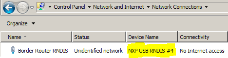
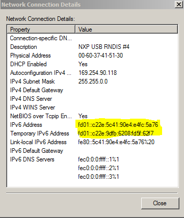

- For Node A, in order to access RNDIS connect USB interface cables to the PC on:
- the OpenSDA / OpenLink USB for KW41Z, or
- the direct-to-KW24 USB
- For Node A, a KINETIS RNDIS device is detected by the Host PC operating system on the KW24 USB port.
- For Windows OS :
- for driver installation, steer the New Hardware found wizard to the
nxp_rndis.inf driver in <Kinetis Thread Installation,
for example,
SDK_2.2_MKW41Z512xxx4\middleware\wireless\framework_5.3.4\SerialManager\Source\USB_VirtualNic\INF\:
- after driver installation, check the device has been detected as a Network
Adapter with ID “NXP USB RNDIS” in the Windows Control Panel

Figure 1. NXP USB RNDIS
- Double click the adapter entry, choose Details… and check that FD01: prefix IPv6 addresses have been provisioned to the adapter:

Figure 2. Adapter entry
- If FD01: addresses are not provisioned, try deselecting any 3rd party options such as Virtual Machine drivers in the interface properties
- For most desktop Linux OS variants should already provisioned with RNDIS drivers through the usbnet modules.
- For MAC OS X the RNDIS Host drivers at github.com/jwise/HoRNDIS may need to be deployed.
- On Node A, also open a shell on the OpenSDA / OpenLink USB port, to create a new Thread network enter:
$ thr create
Note the status messages in the shell indicating the network parameters. Note a Commissioner instance also starts on Node A
- On Node B shell initiate joining with the default PSKd (THREAD):
$ thr join
Note the status messages in the shell indicating the joining results.
- On Node B, enter the ifconfig command to view IP address information:
$ ifconfig
Interface 0: 6LoWPAN
Link local address (LL64): fe80::1885:ba8e:d82a:6fad
Mesh local address (ML64): fd4f:12be:69d2::9c67:fec9:9306:4791
Mesh local address (ML16): fd4f:12be:69d2::ff:fe00:400
Unique local address: fd01::3ead:249f:f277:571a:3109
Link local all Thread Nodes(MCast): ff32:40:fd4f:12be:69d2::01
Realm local all Thread Nodes(MCast): ff33:40:fd4f:12be:69d2::01
- On the Host PC, launch a terminal window (cmd on Windows OS) and ping the Unique local address with prefix FD01::3EAD based address of NodeB:
C:\>ping fd01::3ead:249f:f277:571a:3109
Pinging fd01::3ead:249f:f277:571a:3109 with 32 bytes of data:
Reply from fd01::3ead:249f:f277:571a:3109: time=1024ms
Reply from fd01::3ead:249f:f277:571a:3109: time=31ms
Reply from fd01::3ead:249f:f277:571a:3109: time=22ms
Note applications on the Host PC now have IP layer connectivity to Thread nodes through the border router firmware which assigns Unique Local Addresses (site-local) with prefix FD01:: to all subnets (PC interface and Thread network).